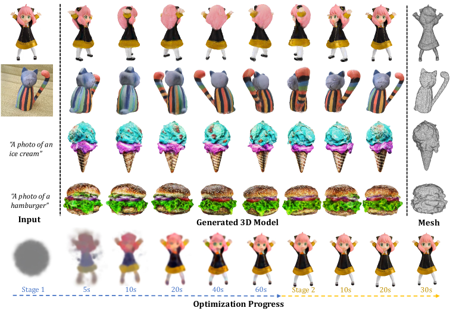
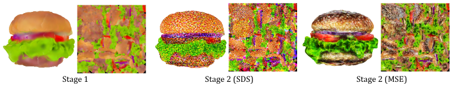
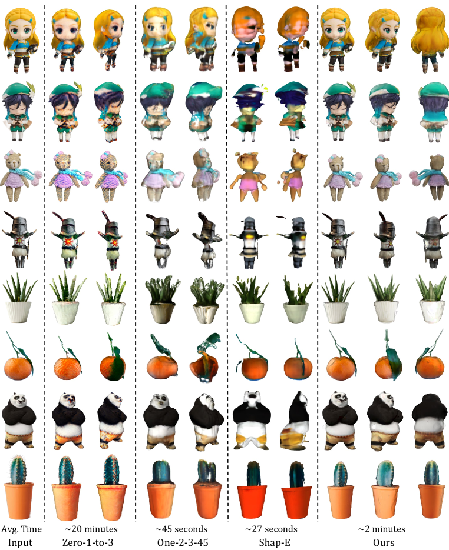
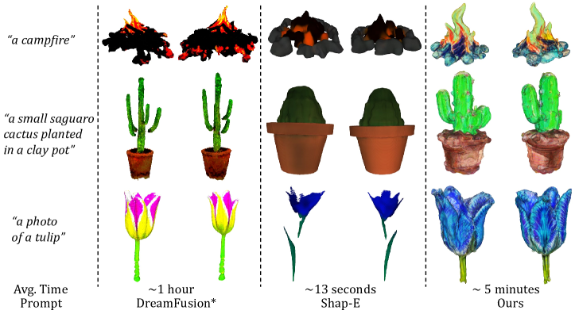

📋 综述概要
3D Generation
Score Distillation
Gaussian Splatting
Text-to-3D
Image-to-3D
3D 生成领域在 2023 年下半年迎来了一次重要转折：从基于 NeRF 的慢速 SDS 优化转向基于 3D 高斯的快速生成。DreamGaussian 和 GaussianDreamer 是这一转折的代表性工作，两者都利用 3D 高斯表示加速 3D 内容创建。
1. DreamGaussian: 生成式高斯 Splatting (arXiv: 2309.16653)
SDS
Progressive Densification
Mesh Extraction
UV Texture Refinement
~2 min
作者: Tang, Ren, Zhou, Liu, Zeng (上海交大 + NTU) | 发表: 2023-09
问题：基于 Score Distillation Sampling (SDS) 的 3D 生成方法虽然效果不错，但每个样本需要慢速优化，限制了实际使用。
核心洞察：3D 高斯的渐进密度化（progressive densification）比 NeRF 的占据剪枝（occupancy pruning）收敛快得多——对 3D 生成任务尤其关键。
方法：
- 设计生成式 3D 高斯 Splatting 模型，通过 SDS 从 2D 扩散模型蒸馏 3D 结构
- 高效的 3D 高斯→纹理网格转换算法
- UV 空间纹理精调阶段，提升细节质量
结果：从单视图图像在 2 分钟内生成高质量纹理网格，比已有方法快约 10 倍。这一速度使 3D 生成从研究演示向实用工具迈进了一大步。
2. GaussianDreamer: 桥接 2D 和 3D 扩散模型 (arXiv: 2310.08529)
Text-to-3D
3D Diffusion Prior
2D Diffusion Prior
Noisy Point Growing
~15 min
CVPR 2024
作者: Yi, Fang, Wang et al. (腾讯 + 清华) | 发表: CVPR 2024
问题：2D 扩散模型泛化好但 3D 一致性差；3D 扩散模型 3D 一致但受限于 3D 训练数据稀缺。如何兼得两者优势？
方法：用 3D 高斯表示桥接两类扩散模型：
- 3D 扩散先验初始化：用 3D 扩散模型提供初始 3D 结构先验
- 2D 扩散精化：通过 SDS 用 2D 扩散模型丰富几何和外观
- 噪声点生长 + 颜色扰动：增强初始化高斯的多样性和覆盖度
结果：15 分钟内从文本生成高质量 3D 实例或 3D 虚拟人，可直接实时渲染。比之前方法快很多，同时质量有竞争力。
📊 对比分析
| 维度 | DreamGaussian | GaussianDreamer |
|---|
| 输入 | 单张图像 | 文本 |
| 2D 先验来源 | SDS (隐式) | SDS (显式精化) |
| 3D 先验 | 无 | 3D 扩散模型 |
| 速度 | ~2 分钟 | ~15 分钟 |
| 输出 | 纹理网格 | 3D 高斯 |
| 核心创新 | 渐进密度化 + 网格提取 | 2D+3D 扩散桥接 |
| 发表 | 2023-09 (arXiv) | CVPR 2024 |
💡 个人分析
- 3D 高斯作为 3D 生成的"正确表示"：这两项工作共同验证了一个重要观点——3D 高斯不仅适用于重建（3DGS），也是 3D 生成的理想表示。高斯的显式性使 SDS 优化更快收敛，且可直接转换为可编辑网格。
- 速度的质变：DreamGaussian 将图生 3D 从小时级压缩到分钟级（2 分钟），GaussianDreamer 将文生 3D 从小时级压缩到 15 分钟。虽然与 Instant3D 的 20 秒相比仍有差距，但这两个工作在 2023 年底是速度与质量的最佳平衡点之一。
- 2D+3D 扩散桥接思路：GaussianDreamer 的"3D 先验初始化 + 2D 先验精化"思路影响深远。这一思路在前馈重建综述中的 Instant3D（多视角扩散 + 前馈重建）中也体现了，只是实现方式不同。
- 与 TRELLIS/Hunyuan3D 的代际差异：DreamGaussian 和 GaussianDreamer 属于 2023 年的 SDS 优化路线，而 TRELLIS 和 Hunyuan3D 属于 2024-2025 年的前馈生成路线。后者速度更快、质量更高，但前者奠定的高斯表示基础功不可没。
- SDS 的局限性与前馈替代：SDS 本质上是从 2D 模型"蒸馏"3D 信息，存在 Janus 问题（多头）和速度慢等固有局限。前馈模型（如 GS-LRM 用于生成、TRELLIS 直接生成）通过大规模 3D 数据训练绕过了 SDS，代表了更未来的方向。
📐 算法框图 / 💡 创新 / 🎯 应用 / 🏋️ 训练 / 📊 数据 / 📐 损失 / 🔄 演进
DreamGaussian 架构

Figure 1: DreamGaussian 旨在加速图像到 3D 和文本到 3D 的优化过程，可在数分钟内生成高质量纹理网格。

Figure 3: 不同纹理微调目标对比。SDS 损失在 UV 空间纹理优化中产生伪影，而提出的 MSE 损失避免了这一问题。

Figure 4: Image-to-3D 对比结果。DreamGaussian 在生成速度和网格质量之间取得了更好的平衡。

Figure 5: Text-to-3D 对比结果。与 DreamFusion 等方法相比，DreamGaussian 使用 Stable-Diffusion 作为 2D 先验，生成质量有竞争力且速度大幅提升。
- 3D 高斯 + SDS：从文本/图像生成 3D 高斯，使用 Score Distillation Sampling
- 两阶段：粗粒度高斯优化 → 精细纹理 mesh 提取
GaussianDreamer 架构
- 3D 高斯 + 扩散先验：利用 2D 扩散模型作为先验，引导 3D 高斯生成
核心创新
- 将 3DGS 表示引入 3D 生成，避免 NeRF 的隐式表示
- 比基于 NeRF 的 SDS 方法快 10×以上
- 直接输出可编辑的 3D 高斯/Mesh
损失函数
- SDS 损失：∇θ L_SDS = E[ε(t)·(ε_φ(z_t; y) - ε)]，φ 为预训练扩散模型
- 参考图像损失：L_ref = ||R(θ) - I_ref||
演进：NeRF+SDS (DreamFusion) → 3DGS+SDS (DreamGaussian) → 前馈生成 (GS-LRM) → Latent 生成 (TRELLIS)。从“优化”到“生成”的效率飞跃。